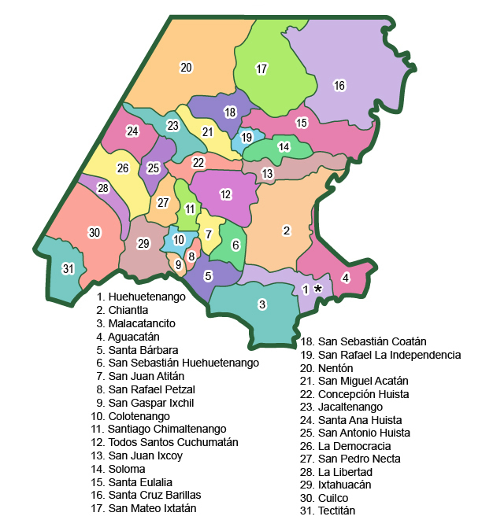

Huehuetenango es un departamento de la República de Guatemala, situado en la región noroccidental del país. Tiene una extensión territorial de 7403 kilómetros cuadrados y su población es de aproximadamente 986 224 personas, de acuerdo al censo nacional de 2006. Cuenta con 32 municipios y su Cabecera Departamental es el municipio de Huehuetenango (Diccionario Municipal de Guatemala, 2001).
Huehuetenango limita al norte con México, al este con el departamento de Quiché, al sur con los departamentos de Totonicapán y San Marcos y al oeste con México. Sus principales idiomas son el castellano, mam, q’anjob’abal, popti’o jakalteko, chuj, awakateco y tektiteko. Su temperatura habitual es de templado a frío y su fiesta titular es el 16 de julio, en honor a la Virgen del Carmen. Su fundación fue el 8 de mayo de 1866 (Diccionario Municipal de Guatemala, 2001).
